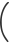
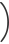
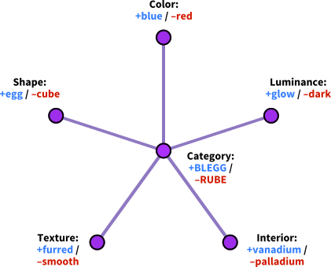

Conditional Independence,
and Naive Bayes
❦
Previously I spoke of mutual information between X and Y, written I(X;Y), which is the difference between the entropy of the joint probability distribution, H(X,Y), and the entropies of the marginal distributions, H(X) + H(Y).
I gave the example of a variable X, having eight states, X1 through X8, which are all equally probable if we have not yet encountered any evidence; and a variable Y, with states Y1 through Y4, which are all equally probable if we have not yet encountered any evidence. Then if we calculate the marginal entropies H(X) and H(Y), we will find that X has 3 bits of entropy, and Y has 2 bits.
However, we also know that X and Y are both even or both odd; and this is all we know about the relation between them. So for the joint distribution (X,Y) there are only 16 possible states, all equally probable, for a joint entropy of 4 bits. This is a 1-bit entropy defect, compared to 5 bits of entropy if X and Y were independent. This entropy defect is the mutual information—the information that X tells us about Y, or vice versa, so that we are not as uncertain about one after having learned the other.
Suppose, however, that there exists a third variable Z. The variable Z has two states, “even” and “odd,” perfectly correlated to the evenness or oddness of (X,Y). In fact, we’ll suppose that Z is just the question “Are X and Y even or odd?”
If we have no evidence about X and Y, then Z itself necessarily has 1 bit of entropy on the information given. There is 1 bit of mutual information between Z and X, and 1 bit of mutual information between Z and Y. And, as previously noted, 1 bit of mutual information between X and Y. So how much entropy for the whole system (X,Y,Z)? You might naively expect that
H(X,Y,Z) = H(X) + H(Y) + H(Z) − I(X;Z) − I(Z;Y) − I(X;Y) ,
but this turns out not to be the case.
The joint system (X,Y,Z) only has 16 possible states—since Z is just the question “Are X and Y even or odd?”—so H(X,Y,Z) = 4 bits. But if you calculate the formula just given, you get
(3 + 2 + 1 − 1 − 1 − 1) bits = 3 bits = Wrong!
Why? Because if you have the mutual information between X and Z, and the mutual information between Z and Y, that may include some of the same mutual information that we’ll calculate exists between X and Y. In this case, for example, knowing that X is even tells us that Z is even, and knowing that Z is even tells us that Y is even, but this is the same information that X would tell us about Y. We double-counted some of our knowledge, and so came up with too little entropy.
The correct formula is (I believe):
H(X,Y,Z) = H(X) + H(Y) + H(Z) − I(X;Z) − I(Z;Y) − I(X;Y|Z).
Here the last term, I(X;Y|Z), means, “the information that X tells us about Y, given that we already know Z.” In this case, X doesn’t tell us anything about Y, given that we already know Z, so the term comes out as zero—and the equation gives the correct answer. There, isn’t that nice?
“No,” you correctly reply, “for you have not told me how to calculate I(X;Y|Z), only given me a verbal argument that it ought to be zero.”
We calculate I(X;Y|Z) just the way you would expect. We know I(X;Y) = H(X) + H(Y) − H(X,Y), so
I(X;Y|Z) = H(X|Z) + H(Y|Z) − H(X,Y|Z).
And now, I suppose, you want to know how to calculate the conditional entropy? Well, the original formula for the entropy is
H(S) = Σi −P(Si) × log 2(P(Si)).
If we then learned a new fact Z0, our remaining uncertainty about S would be
H(S|Z0) = Σi −P(Si|Z0)log2(P(Si|Z0)).
So if we’re going to learn a new fact Z, but we don’t know which Z yet, then, on average, we expect to be around this uncertain of S afterward:
H(S|Z) = Σj P(Zj)Σi −P(Si|Zj)log2(P(Si|Zj)).
And that’s how one calculates conditional entropies; from which, in turn, we can get the conditional mutual information.
There are all sorts of ancillary theorems here, like
H(X|Y) = H(X,Y) − H(Y)
and
if I(X;Z) = 0 and I(Y;X|Z) = 0 then I(X;Y) = 0,
but I’m not going to go into those.
“But,” you ask, “what does this have to do with the nature of words and their hidden Bayesian structure?”
I am just so unspeakably glad that you asked that question, because I was planning to tell you whether you liked it or not. But first there are a couple more preliminaries.
You will remember—yes, you will remember—that there is a duality between mutual information and Bayesian evidence. Mutual information is positive if and only if the probability of at least some joint events P(x,y) does not equal the product of the probabilities of the separate events P(x)P(y). This, in turn, is exactly equivalent to the condition that Bayesian evidence exists between x and y:
| I(X;Y) | > | 0 ⇒ |
| P(x,y) | ≠ | P(x)P(y) |
| P(x,y) | ≠ | P(x) |
| P(y) | ||
| P(x|y) | ≠ | P(x) |
If you’re conditioning on Z, you just adjust the whole derivation accordingly:
| I(X;Y|Z) | > | 0 ⇒ | |
| P(x,y|z) | ≠ | P(x|z)P(y|z) | |
| P(x,y|z) | ≠ | P(x|z) | |
| P(y|z) | |||
| (P(x,y,z)/P(z)) | ≠ | P(x|z) | |
| (P(y,z)/P(z)) | |||
| P(x,y,z) | ≠ | P(x|z) | |
| P(y,z) | |||
| P(x|y,z) | ≠ | P(x|z). | |
Which last line reads “Even knowing Z, learning Y still changes our beliefs about X.”
Conversely, as in our original case of Z being “even” or “odd,” Z screens off X from Y—that is, if we know that Z is “even,” learning that Y is in state Y4 tells us nothing more about whether X is X2, X4, X6, or X8. Or if we know that Z is “odd,” then learning that X is X5 tells us nothing more about whether Y is Y1 or Y3. Learning Z has rendered X and Y conditionally independent.
Conditional independence is a hugely important concept in probability theory—to cite just one example, without conditional independence, the universe would have no structure.
Here, though, I only intend to talk about one particular kind of conditional independence—the case of a central variable that screens off other variables surrounding it, like a central body with tentacles.
Let there be five variables U, V, W, X, and Y; and moreover, suppose that for every pair of these variables, one variable is evidence about the other. If you select U and W, for example, then learning U = U1 will tell you something you didn’t know before about the probability that W = W1.
An unmanageable inferential mess? Evidence gone wild? Not necessarily.
Maybe U is “Speaks a language,” V is “Two arms and ten digits,” W is “Wears clothes,” X is “Poisonable by hemlock,” and Y is “Red blood.” Now if you encounter a thing-in-the-world, that might be an apple and might be a rock, and you learn that this thing speaks Chinese, you are liable to assess a much higher probability that it wears clothes; and if you learn that the thing is not poisonable by hemlock, you will assess a somewhat lower probability that it has red blood.
Now some of these rules are stronger than others. There is the case of Fred, who is missing a finger due to a volcano accident, and the case of Barney the Baby who doesn’t speak yet, and the case of Irving the IRCBot who emits sentences but has no blood. So if we learn that a certain thing is not wearing clothes, that doesn’t screen off everything that its speech capability can tell us about its blood color. If the thing doesn’t wear clothes but does talk, maybe it’s Nude Nellie.
This makes the case more interesting than, say, five integer variables that are all odd or all even, but otherwise uncorrelated. In that case, knowing any one of the variables would screen off everything that knowing a second variable could tell us about a third variable.
But here, we have dependencies that don’t go away as soon as we learn just one variable, as the case of Nude Nellie shows. So is it an unmanageable inferential inconvenience?
Fear not! For there may be some sixth variable Z, which, if we knew it, really would screen off every pair of variables from each other. There may be some variable Z—even if we have to construct Z rather than observing it directly—such that:
| P(U|V,W,X,Y,Z) | = | P(U|Z) |
| P(V|U,W,X,Y,Z) | = | P(V|Z) |
| P(W|U,V,X,Y,Z) | = | P(W|Z) |
| ⋮ |
Perhaps, given that a thing is “human,” then the probabilities of it speaking, wearing clothes, and having the standard number of fingers, are all independent. Fred may be missing a finger—but he is no more likely to be a nudist than the next person; Nude Nellie never wears clothes, but knowing this doesn’t make it any less likely that she speaks; and Baby Barney doesn’t talk yet, but is not missing any limbs.
This is called the “Naive Bayes” method, because it usually isn’t quite true, but pretending that it’s true can simplify the living daylights out of your calculations. We don’t keep separate track of the influence of clothed-ness on speech capability given finger number. We just use all the information we’ve observed to keep track of the probability that this thingy is a human (or alternatively, something else, like a chimpanzee or robot) and then use our beliefs about the central class to predict anything we haven’t seen yet, like vulnerability to hemlock.
Any observations of U, V, W, X, and Y just act as evidence for the central class variable Z, and then we use the posterior distribution on Z to make any predictions that need making about unobserved variables in U, V, W, X, and Y.
Sound familiar? It should:

Network 2
As a matter of fact, if you use the right kind of neural network units, this “neural network” ends up exactly, mathematically equivalent to Naive Bayes. The central unit just needs a logistic threshold—an S-curve response—and the weights of the inputs just need to match the logarithms of the likelihood ratios, et cetera. In fact, it’s a good guess that this is one of the reasons why logistic response often works so well in neural networks—it lets the algorithm sneak in a little Bayesian reasoning while the designers aren’t looking.
Just because someone is presenting you with an algorithm that they call a “neural network” with buzzwords like “scruffy” and “emergent” plastered all over it, disclaiming proudly that they have no idea how the learned network works—well, don’t assume that their little AI algorithm really is Beyond the Realms of Logic. For this paradigm of adhockery, if it works, will turn out to have Bayesian structure; it may even be exactly equivalent to an algorithm of the sort called “Bayesian.”
Even if it doesn’t look Bayesian, on the surface.
And then you just know that the Bayesians are going to start explaining exactly how the algorithm works, what underlying assumptions it reflects, which environmental regularities it exploits, where it works and where it fails, and even attaching understandable meanings to the learned network weights.
Disappointing, isn’t it?